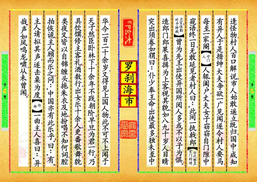
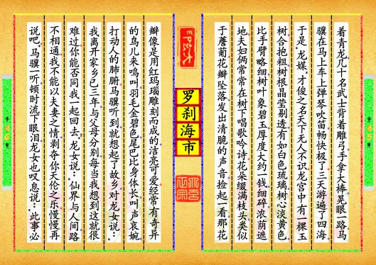
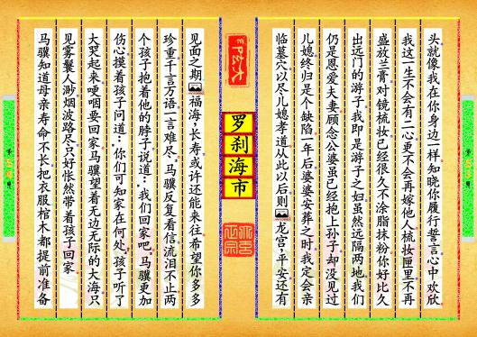

-
第【1-2】页⬛原文⬛马骥，字龙媒，贾[商人]人子，美丰姿，少倜傥，喜歌舞。辄[就]从梨园子弟，以锦帕缠头，美如好女，因复有“俊人”之号。十四岁入郡庠[学校]，即知名。父衰老，罢贾而归，谓生曰：“数卷书，饥不可煮，寒不可衣，吾儿可仍继父贾。”马由是稍稍权子母[指经商。权，权衡。子母，原指货币的大小、轻重，后来指利息与本钱]。从人浮海，为飓风引去，数昼夜至一都会。其人皆奇丑，见马至，以为妖，群哗而走。马初见其状，大惧，迨[等到]知国中之骇己也，遂反以此欺国人。遇饮食者则奔而往，人惊遁，则啜[吃]其余。久之入山村，其间形貌亦有似人者，然褴褛如丐。马息树下，村人不敢前，但遥望之。久之觉马非噬人者，始稍稍近就之。马笑与语，其言虽异，亦半可解。马遂自陈所自，村人喜，遍告邻里，客非能搏噬者。然奇丑者望望即去，终不敢前；其来者，口鼻位置，尚皆与中国同，预览书籍 全文配置
-
第【3-4】页共罗浆酒奉马，马问其相骇之故，答曰：“尝闻祖父言：西去二万六千里，有中国，其人民形象率诡异。但耳食之，今始信。”问其何贫，曰：“我国所重，不在文章，而在形貌。其美之极者，为上卿；次任民社[民间祭祀土地的官员]；下焉者，亦邀贵人宠，故得鼎烹以养妻子。若我辈初生时，父母皆以为不祥，往往置弃之，其不忍遽[立即]弃者，皆为宗嗣耳。”问：“此名何国？”曰：“大罗刹国。都城在北去三十里。”马请导往一观。于是鸡鸣而兴[起床]，引与俱去。天明，始达都[都城]。都以黑石为墙，色如墨，楼阁近百尺。然少瓦。覆以红石，拾其残块磨甲上，无异丹砂。时值朝退，朝中有冠盖出，村人指曰：“此相国也。”视之，双耳皆背生[向后长]，鼻三孔，睫毛覆目如帘。又数骑出，曰：“此大夫也。”以次各指其官职，率狰狞怪异。然位渐卑，丑亦渐杀[减少]。无何，马归，街衢[大路]人望见之，噪奔跌蹶[跌倒]，如预览书籍 全文配置
-
第【5-6】页 逢怪物。村人百口解说，市人始敢遥立。既归，国中咸知有异人，于是搢绅大夫，争欲一广见闻，遂令村人要马。每至一家，阍[守门人]人辄阖户，丈夫女子窃窃自门隙中窥语，终一日，无敢延见者。村人曰：“此间一执戟郎[古代警卫宫门的侍卫官，值勤时手持戟]，曾为先王出使异国，所阅人多，或不以子为惧。”造郎门。郎果喜，揖为上客。视其貌，如八九十岁人。目睛突出，须卷如猬。曰：“仆少奉王命出使最多，独未至中华。今一百二十余岁，又得见上国人物，此不可不上闻于天子。然臣卧林下，十余年不践朝阶，早旦为君一行。”乃具饮馔，修主客礼。酒数行，出女乐十余人，更番歌舞。貌类夜叉，皆以自锦缠头，拖朱衣及地。扮唱不知何词，腔拍恢诡。主人顾而乐之。问：“中国亦有此乐乎？”曰：“有”。主人请拟其声，遂击桌为度[作曲]一曲。主人喜曰：“异哉！声如凤鸣龙啸，从未曾闻。”预览书籍 全文配置
-
第【7-8】页翼[第二天]日趋朝，荐诸国王。王忻然下诏，有二三大夫言其怪状，恐惊圣体，王乃止。郎出告马，深为扼腕。居久之，与主人饮而醉，把剑起舞，以煤涂面作张飞。主人以为美，曰：“请君以张飞见宰相，厚禄不难致。”马曰：“游戏犹可，何能易面目图荣显？”主人强之，马乃诺。主人设筵，邀当路者，令马绘面以待。客至，呼马出见客。客讶曰：“异哉！何前媸[丑]而今妍[美]也！”遂与共饮，甚欢。马婆娑歌“弋阳曲”[弋阳腔，中国戏曲高腔，四大声腔之一，接近灭绝]，一座无不倾倒。明日交章荐马，王喜，召以旌节。既见，问中国治安之道，马委曲上陈，大蒙嘉叹，赐宴离宫[行宫]。酒酣，王曰：“闻卿善雅乐，可使寡人得而闻之乎？”马即起舞，亦效白锦缠头，作靡靡之音。王大悦，即日拜下大夫。时与私宴，恩宠殊异。久而官僚知其面目之假，所至，辄见人耳语，不甚与款洽。马至是孤立，怡然不自安。遂上疏乞休致[退休]，不许；又告预览书籍 全文配置
-
第【9-10】页休沐[休假]，乃给三月假。于是乘传[复归村。村人膝行以迎。马以金资分给旧所与交好者，欢声雷动。村人曰：“吾侪[辈]小人受大夫赐，明日赴海市，当求珍玩以报”，问：“海市何地？”曰：“海中市，四海鲛[神话传说住在海里的人]人，集货珠宝。四方十二国，均来贸易。中多神人游戏。云霞障天，波涛间作。贵人自重，不敢犯险阻，皆以金帛付我辈代购异珍。今其期不远矣。”问所自知，曰：“每见海上朱鸟往来，七日即市。”马问行期，欲同游瞩，村人劝使自贵。马曰：“我顾沧海客，何畏风涛？”未几，果有踵门寄资者，遂与装资入船。船容数十人，平底高栏。十人摇橹，激水如箭。凡三日，遥见水云幌漾[荡漾]之中，楼阁层叠，贸迁之舟，纷集如蚁。少时抵城下，视墙上砖皆长与人等，敌楼高接云汉。维舟而入，见市上所陈，奇珍异宝，光明射目，多人世所无。一少年乘骏马来，市人尽奔避，云是“东洋三世子[王侯之子]。预览书籍 全文配置
-
第【11-12】页”世子过，目生曰：“此非异域人。”即有前马者来诘乡籍。生揖道左，具展邦族。世子喜曰：“既蒙辱临，缘分不浅！”于是授生骑，请与连辔。乃出西城，方至岛岸，所骑嘶跃入水。生大骇失声。则见海水中分，屹如壁立。俄睹宫殿，玳瑁为梁，鲂[一种鱼]鳞作瓦，四壁晶明，鉴影炫目。下马揖入。仰视龙君在上，世子启奏：“臣游市廛[古代城市平民的房地]，得中华贤士，引见大王。”生前拜舞。龙君乃言：“先生文学士，必能衙官屈宋[先秦楚辞作家屈原和宋玉的合称]。欲烦椽笔赋《海市》，幸无吝珠玉。”生稽首受命。授以水晶之砚，龙鬣之毫，纸光似雪，墨气如兰。生立成千余言，献殿上。龙君击节曰：“先生雄才，有光水国矣！”遂集诸龙族，宴集采霞宫。酒炙数行，龙君执爵向客曰：“寡人所怜女，未有良匹，愿累先生。先生倘有意乎？”生离席愧荷，唯唯而已。龙君顾左右语。无何，宫女数人扶女郎出，佩环声动，鼓吹预览书籍 全文配置
-
第【13-14】页暴作，拜竟睨之，实仙人也。女拜已而去。少时酒罢，双鬟挑画灯，导生入副宫，女浓妆坐伺。珊瑚之床饰以八宝，帐外流苏缀明珠如斗大，衾褥皆香软。天方曙，雏女妖鬟，奔入满侧。生起，趋出朝谢。拜为驸马都尉。以其赋驰传诸海。诸海龙君，皆专员来贺，争折简招驸马饮。生衣绣裳，坐青虬，呵殿而出。武士数十骑，背雕弧[雕弓]，荷白棓[棒子]，晃耀填拥。马上弹筝，车中奏玉。三日间，遍历诸海。由是龙媒[马骥的字，本义为才俊]之名，噪于四海。宫中有玉树一株，围可合抱，本莹澈如白琉璃，中有心淡黄色，稍细于臂，叶类碧玉，厚一钱许，细碎有浓阴。常与女啸咏其下。花开满树，状类薝[古书上说的一种植物]葡。每一瓣落，锵然作响。拾视之，如赤瑙雕镂，光明可爱。时有异鸟来鸣，毛金碧色，尾长于身，声等哀玉，恻人肺腑。生闻之，辄念故土。因谓女曰：“亡出三年，恩慈间阻，每一念及，涕膺汗背。预览书籍 全文配置
-
第【15-16】页卿能从我归乎？”女曰：“仙尘路隔，不能相依。妾亦不忍以鱼水之爱，夺膝下之欢。容徐谋之。”生闻之，涕不自禁。女亦叹曰：“此势之不能两全者也！”明日，生自外归。龙王曰：“闻都尉有故土之思，诘旦[天亮]趣装[速整行李]，可乎？”生谢曰：“逆旅[旅社，客店]孤臣，过蒙优宠，衔报[衔环报恩，是指用礼物或金钱来报答对方]之思，结于肺腑。容暂归省[回家看父母]，当图复聚耳。”入暮，女置酒话别。生订后会，女曰：“情缘尽矣。”生大悲，女曰：“归养双亲，见君之孝，人生聚散，百年犹旦暮耳，何用作儿女哀泣？此后妾为君贞，君为妾义，两地同心，即伉俪也，何必旦夕相守，乃谓之偕老乎？若渝此盟，婚姻不吉。倘虑中馈乏人，纳婢可耳。更有一事相嘱：自奉衣裳[伺候梳洗，谓充当妻室]，似有佳朕[预兆，指怀孕]，烦君命名。”生曰：“其女耶可名龙宫，男耶可名福海。”女乞一物为信，生在罗刹国所得赤玉莲花一对，出以授女。女曰：“三年后四月预览书籍 全文配置
-
第【17-18】页八日，君当泛舟南岛，还君体胤[后代]。”女以鱼革为囊，实以珠宝，授生曰：“珍藏之，数世吃着不尽也。”天微明，王设祖帐，馈遗甚丰。生拜别出宫，女乘白羊车。送诸海涘[水边]。生上岸下马，女致声珍重，回车便去，少顷便远，海水复合，不可复见。生乃归。自浮海去，家人无不谓其已死；及至家人皆诧异。幸翁媪[父母]无恙，独妻已去帷[改嫁]。乃悟龙女“守义”之言，盖已先知也。父欲为生再婚，生不可，纳婢焉。谨志三年之期，泛舟岛中。见两儿坐在水面，拍流嬉笑，不动亦不沉。近引之，儿哑然捉生臂，跃入怀中。其一大啼，似嗔生之不援己者。亦引上之。细审之，一男一女，貌皆俊秀。额上花冠缀玉，则赤莲在焉。背有锦囊，拆视，得书云：“翁姑俱无恙。忽忽三年，红尘永隔；盈盈一水，青鸟[指信件]难通，结想为梦，引领成劳。茫茫蓝蔚[指海水]，有恨如何也！顾念奔预览书籍 全文配置
-
第【19-20】页月姮娥，且虚桂府；投梭织女，犹怅银河。我何人斯，而能永好？兴思及此，辄复破涕为笑。别后两月，竟得孪生。今已啁啾[原意形容鸟鸣，此处比喻善言语]怀抱，颇解言笑；觅枣抓梨，不母可活。敬以还君。所贻赤玉莲花，饰冠作信。膝头抱儿时，犹妾在左右也。闻君克践旧盟，意愿斯慰。妾此生不二，之死靡他。奁中珍物，不蓄兰膏；镜里新妆，久辞粉黛。君似征人，妾作荡妇，即置而不御，亦何得谓非琴瑟哉？独计翁姑已得抱孙，曾未一觌[见]新妇，揆[推测]之情理，亦属缺然。岁后阿姑窀穸[墓穴，埋葬]，当往临穴，一尽妇职。过此以往，则‘龙宫’无恙，不少把握之期；‘福海’长生，或有往还之路。伏惟珍重，不尽欲言。”生反覆省书揽涕。两儿抱颈曰：“归休乎！”生益恸抚之，曰：“儿知家在何许？”儿啼，呕哑[小儿语声]言归。生视海水茫茫，极天无际，雾鬟[遮住]人渺，烟波路穷。抱儿返棹，怅然遂归。预览书籍 全文配置
-
第【21-22】页生知母寿不永，周身物悉为预具，墓中植松槚[楸树或茶树]百余。逾岁，媪果亡。灵舆[棺材]至殡宫[墓地]，有女子缞绖[穿着丧服]临穴。众惊顾，忽而风激雷轰，继以急雨，转瞬已失所在。松柏新植多枯，至是皆活。福海稍长，辄思其母，忽自投入海，数日始还。龙宫以女子不得往，时掩户泣。一日昼暝，龙女急入，止之曰：“儿自成家，哭泣何为？”乃赐八尺珊瑚一株，龙脑香一帖，明珠百粒，八宝嵌金合一双，为嫁资。生闻之突入，执手啜泣。俄顷，迅雷破屋，女已无矣。异史氏[蒲松龄自称]曰：花面逢迎，世情如鬼。嗜痂之癖，举世一辙。小惭小好，大惭大好。若公然带须眉以游都市，其不骇而走者盖几希矣！彼陵阳痴子[指春秋时楚人卞和，曾封陵阳侯]，将抱连城玉向何处哭也？呜呼！显荣富贵，当于蜃楼海市中求之耳。预览书籍 全文配置
-
第【23-24】页⬛译文⬛马骥，字龙媒，商人之子。姿容俊美，从少年时起，就十分豪迈洒脱，爱好唱歌跳舞，经常跟着戏曲伶人用锦帕缠头，俊俏得如同美女！因而又有了“俊人”的外号。十四岁时，考中了府学里的秀才，颇有名气。父亲因年老体衰，歇了买卖回家，对马骥说：“但凭那几卷书，饿了不能当米煮，冷了不能当衣穿！你不如继承我的事业，出去经商。”马骏从此渐渐做起生意来了。他跟别人一起漂洋过海，船被台风刮走，漂了几天几夜，最后到了一座大都城：这里的人都长得奇丑无比！他们看见马骥来了，以为是个妖怪，都吓得连喊带叫逃散开了！马骥初次看到他们那副丑模样也异常害怕，直到发现这里的人也害怕自己，便反而以此去吓唬他们，遇见吃饭饮酒的，他就跑过去，把那些人吓跑了，自己便吃他们预览书籍 全文配置
-
第【25-26】页剩下的食物。过了很久，他走进一个山村：村里人的形状相貌，也有生得像个人样的，但都穿得破破烂烂，如同乞丐。马骥坐在树下休息，村里人不敢靠近他，只是远远躲着张望。时间长了，他们觉得马骥不像是吃人的，于是渐渐地接近他，马骥笑着和他们交谈，语言虽不同，却大约可听懂一半。马骥就把自己的来历告诉他们，村里人听了很高兴，立即告诉邻近所有人，说这个生客不是抓人吃人的。但是那些长得特别丑陋的村民，只在远处望一眼便赶紧跑掉，始终不敢走到跟前；那些敢于走近的人，其五官位置都长得和中国人差不多，共同摆酒招待马骥。马骥问他们为什么怕自己，他们说：“听闻祖父说过，此地往西二万六千里，有个中国，那里人的形象大都奇形怪状。但这些都是道听途说，今日看到了你，这才信了！”问他们为何这样穷困，预览书籍 全文配置
-
第【27-28】页他们说：“我国所注重的，不在于文章好坏，而在于容貌美丑。相貌最美的，可以做朝廷大官，次一等的，做地方官，再差些的也可博得贵人的恩宠，因而也能得到美食养活妻子儿女。像我们这样的刚一生下来，就被父母看成不吉利，往往被扔掉；有些人之所以不被父母忍心遗弃，也只是为了传宗接代罢了。”马骥又问他们：“这个国家叫什么名字？”回道：“大罗刹国，都城就在北边三十里。”马骥就请他们领自己去参观。第二天，鸡一打鸣便起床，村人引着马骥一起前往。天亮才到达都城，都城是用黑色石头砌的城墙，颜色如墨汁一样；城内的楼阁高约百尺，可是很少用瓦，都是用红石覆盖楼顶。马骥捡起一点碎片在指甲上打磨，和朱砂没有差别。这时正赶上百官退朝，从朝廷中出来一个坐车的官员，村人指着说：“这是当朝的宰预览书籍 全文配置
-
第【29-30】页相。”马骥定睛一看：两个耳朵都是倒过来生的，鼻子有三个孔，睫毛遮住双眼，如同帘子一样！接着，又有几个官员骑马出来，村人说：“这些都是大夫。”然后逐个介绍他们官职，相貌大都长得狰狞怪异！可是随着官职的降低，丑陋的程度也随之减弱。不久，马骥往回走，街上行人望见他，都惊叫着四散逃开，边逃边跌，好似碰见妖怪一般！村人向他们百般解释，市中的人才敢远远站立观望。马骥回到山村后，全国无论大小，都知道这村子里来了异人，于是，满朝官员都争着要开开眼界，便吩咐村人邀约马骥。可马骥每到一家，守门人一见就立即关上大门，男男女女只敢从门缝里偷偷张望议论。整整一天，没有哪一家敢开门请他进去。村人说：“这里有一位执戟郎，曾为老国王多次出使外国，他见过各色各样人物，或许不怕你。”于是就去拜访这位执预览书籍 全文配置
-
第【31-32】页戟郎，执戟郎果然很高兴，很礼貌地把他待为上宾。看执戟郎的相貌：像是八九十岁的老人，眼球突出，胡须像刺猬毛似的往上卷曲着。执戟郎说：“我年轻时，奉国王之命，出使外国次数最多，却唯独没有到过中华。如今，我已一百二十多岁，能亲眼看到你这位上国人物，此事不可不奏明国王。但是我已退居林下，十几年没踏上朝廷的台阶了。明日一早，我要为你走一趟。”于是便安排酒宴，主人和宾客按照应有的礼节互相行礼入席。行过几巡酒，出来十几名歌女，轮番表演歌舞：她们面貌大都如同夜叉，皆用白绸缠头，朱红色的长衣拖到地面，不知扮演的是何人物，更不明白所唱的歌词，只觉腔调节拍荒诞怪异。主人看着她们，十分高兴，问马骥道：“中国可有此等音乐？”马骥答道：“有的。”执戟郎请他模仿一段，马骥就敲着桌子唱了一曲。主预览书籍 全文配置
-
第【33-34】页人听了，很高兴说：“真新奇呀！歌声如同凤鸣龙啸，我从未听过。”次日，执戟郎上朝去，把马骥推荐给国王，国王欣然下令，要召见马骥。此时，有两三个大臣说马骥长得古怪难看，恐怕吓坏圣体，国王终于打消了接见的念头。执戟郎知晓后把经过告诉了马骥，深表惋惜和不平。马骥一连在执戟郎家中住了数日。一次，和主人一起喝酒，喝醉了，就用煤灰涂脸，扮成张飞的模样，握剑起舞。主人见了，认为这模样很漂亮，就说：“请你扮成张飞的模样去见宰相，宰相一定乐意重用你，高官厚禄不难求。”马骥嘻地笑了一声，说：“随便玩耍尚可，怎能改换面目去谋求荣华富贵？”主人坚持要马骥这样做，最后只好答应了。主人于是摆酒设宴，邀请一些当权大官前来喝酒，又让马骥涂黑脸等着。不久，客人来了，主人预览书籍 全文配置
-
第【35-36】页招呼马骥出来见客。客人们一见，惊讶说道：“怪事，为何前几日那么丑陋，今日却如此好看？”于是就与马骥一同饮酒，十分高兴。马骥随后婆娑起舞，以一曲“弋阳腔”赢得满座无不赞美钦佩！第二日，那些客人纷纷上表启奏，向国王推荐马骥，国王很高兴，用隆重礼节召见他。一见面，就仔细询问中国治国安邦之策，马骥深入浅出向国王做了介绍，大受国王赏识夸奖，立即在行宫里摆酒赐宴。喝到半醉，国王说：“听说爱卿精通雅乐，可否让寡人一听？”马骥马上离座跳起舞来，也学他们那样用白绸缠头，吟唱靡靡之音。国王快活极了，当时就封他做下大夫。此后，马骥时常参加国王私人宴会，国王对他的恩赐、宠爱远远超过别人。但是，时日久了，文武百官逐渐感到马骥的假面目。马骥不论走到哪里总见到人们交头接耳议论他，对他相当冷淡。这时，马预览书籍 全文配置
-
第【37-38】页骥感到孤立无依，心中很是不安，于是上书要求辞官，国王不许；他又请求短期休假，国王同意给他三个月假期。马骥就乘坐驿站的马车，载着金银珠宝，又回到了山村。村里人跪在地上，用膝盖向前挪移着来迎接他，马骥把金银财宝分给早先结交的好友，村里欢声雷动。村民看他如此慷慨仗义，十分感动，说道：“难为大人还记挂我们这些小人。明天我们就要去海市了，届时，一定搜罗珍奇之物来报答您。”马骥好奇，问道：“海市是何处？”村人答道：“就是海中集市。四海鲛人都到那里卖珠宝，各国商人也到那儿贸易，甚至很多神仙也到海市上玩耍呢。海市虽然珍宝琳琅满目，但交易时总是云霞遮天，波涛大作。所以达官贵人一般不敢前往，他们多数是将钱交与我们，让我们代购奇珍异宝。预览书籍 全文配置
-
第【39-40】页再过不了几日，今年的海市就要开张了。”马骥询问具体是在哪天，回道：“海上一有朱鸟飞来飞去，再过七天便是海市”。马又问出发时间，村人劝他注意自己尊贵的身份，不要贸然前往。马骥说：“我本就是漂洋过海的商客，不惧风浪。”不久，果然有人上门送钱代购，村民们忙着装载货物。船能装几十人，船底平台，栏杆高耸。十个人摇橹，行驶在波浪上如箭般迅速。航行三天，远望水天荡漾之处，楼阁层层叠叠，商船密密麻麻如同蚂蚁。不一会儿，船抵达海市城下，看城墙都用和人一样长的大石块垒成，瞭望塔更是高耸入云。马骥把船拴好，走进海市，看到市面上陈列的东西，没有一件不是奇珍异宝，光彩夺目，都是人间所没见过的。一个年轻人骑着骏马过来，街上的人纷纷避让，说是“东海三太子”。三太子经过，看着马骥：“这人不是当地预览书籍 全文配置
-
第【41-42】页人。”随从上前询问马骥的籍贯。马骥很恭敬在路旁行了礼，说自己是中国人。三太子大喜道：“您既然来了，我们缘分不浅。”马上叫人牵来一匹马，请马骥和他同行游览。他们一行人出了城门西面，到了海边，马儿长嘶一声，向水中跃去！马骥吓得失声。此时海水迅速向两边退开，两堵墙壁那样竖着。不一会儿，看到宫殿玳瑁作梁，鱼鳞为瓦，四周墙壁如水晶般透明，发出炫目的光彩。马骥下了马作揖进入宫殿，抬头见到龙王端坐在上。三太子启奏：“臣在海市游览时，遇见这位中国来的贤士，带他晋见大王。”马骥上前参拜。龙王吩咐说：“先生既然是饱学之士，肯定善于写诗作赋。想要劳您以《海市》为题，希望不要吝惜你的文采。”马骥欣然受命，龙王给他一方水晶砚台、一支龙须笔、一张光滑如雪的纸张以及香气如兰的墨。马骥站着就写好了预览书籍 全文配置
-
第【43-44】页千字文章，献上龙王。龙王击节赞叹：“先生真乃雄才，使我水国增光啊！”随即下令召集龙族，在彩霞宫设宴款待马骥。酒过几巡，龙王举杯对马骥说：“我有个爱女还未成亲，想把她嫁与先生，先生是否有意？”马骥离席站起，惭愧感激，连忙答应。龙王回头对左右吩咐。片刻后，几个宫女扶着公主走出来，身上的装饰叮当作响，鼓乐齐鸣。马骥拜见后偷偷看了一眼，真是貌美如仙。公主回拜后离开。不多时，宴席散了，两个丫鬟挑着宫灯，领着马骥进入旁宫，龙女浓妆坐等。珊瑚做的床，装饰着各种珠宝，帐外流苏，缀着斗大的明珠，被褥又香又软。天刚亮，便有年幼的丫鬟前来侍奉。马骥起床，上朝拜谢，龙王封马骥为驸马都尉，把他写的《海市赋》传阅四海。四海龙王都派人来祝贺，抢着发请柬，邀请驸马前去做客。马骥身穿锦绣衣服，骑预览书籍 全文配置
-
第【45-46】页 着青龙，几十名武士背着雕弓，手拿大棒，晃眼一路。马骥在马上车上弹琴吹笛，畅快极了。三天游遍了四海，于是“龙媒”才俊之名天下无人不识。龙宫中有一棵玉树，合抱粗，树根晶莹剔透，有如白色琉璃，树心淡黄色，比手臂略细，树叶象碧玉，厚度大约一钱，细碎，浓荫遮地。夫妇俩常常在树下唱歌吟诗。花朵缀满枝头，类似于薝葡。花瓣坠落，发出清脆的声音，捡起一看，那花瓣像是用红玛瑙雕刻而成的，洁亮可爱。经常有奇异的鸟儿来鸣叫，羽毛金碧色，尾巴比身体长，叫声哀婉，打动人的肺腑。马骥听到，就想起了故乡，对龙女说：“我离开家乡已三年，与父母分别，每当我想到这就很难过。你能否同我一起回去？”龙女说：“仙界与人间，路不相通。我不能以夫妻之情，剥夺你天伦之乐。慢慢再说吧。”马骥一听，顿时流下眼泪，龙女也叹息说：“此事必预览书籍 全文配置
-
第【47-48】页不能两全其美。”第二天，见马骥从外边回来，龙王说：“听说驸马思念家乡，明早送你启程，可以吗？”马骥拜谢道：“我一个孤身旅居在外的臣子，过分受到宠爱，牢记在心。容许我暂时回家探望父母，以后还要回来团聚。”到了傍晚，龙女置下酒宴为他送行。马骥要求定个相会的日子，龙女说：“我们俩的缘分已尽。”马骥十分伤心。龙女安慰道：“回家侍奉双亲，可见你是个孝子。人生总有聚散，百年犹如旦夕之间，驸马何必作儿女状悲泣？从此以后，我为郎君守节，郎君为我守义，两地同心，即为伉俪之情，又何必朝夕相处？你我一样白头偕老！如若违背此誓言，则彼此婚姻不吉，郎君倘若忧思身旁无人侍奉，可纳一婢女。另外，还有一事相嘱：我已经有了身孕，你给孩子取个名字吧。”马骥说：“如果是个女孩，就叫‘龙宫’，要是男孩，就叫‘福海’吧。”龙女预览书籍 全文配置
-
第【49-50】页
 向他要一件信物，马骥便找出在罗刹国获得的一对赤玉莲花送给她。龙女轻轻抚着莲花花瓣，说：“三年后四月八日，你驾船到南岛来，我把孩子托付给你。”龙女用鱼皮做成袋子，在里面装满了珍宝，送给马骥，说道：“珍藏它，可保数世吃穿不尽。”天明后，龙王设帐款待，送了很多礼品。马骥拜别龙王，龙女乘着一辆白羊车，一直把丈夫送到海边，便回转羊车离开了。不一会儿，就走远了，海水又重新合在一起，龙女的身影再也看不见。马骥于是回家了。马骥出海后，家里人都以为他早死了。等他回到家中，家人又惊又喜。庆幸的是父母健在，只是妻子已改嫁他人，这才领悟龙女的“守义”之言，原来她早就知道了。不久，父亲想让他再娶个妻子，马骥坚决不同意，只要了婢女。马骥一直牢记着三年之约，驾船到南岛，四处预览书籍 全文配置
向他要一件信物，马骥便找出在罗刹国获得的一对赤玉莲花送给她。龙女轻轻抚着莲花花瓣，说：“三年后四月八日，你驾船到南岛来，我把孩子托付给你。”龙女用鱼皮做成袋子，在里面装满了珍宝，送给马骥，说道：“珍藏它，可保数世吃穿不尽。”天明后，龙王设帐款待，送了很多礼品。马骥拜别龙王，龙女乘着一辆白羊车，一直把丈夫送到海边，便回转羊车离开了。不一会儿，就走远了，海水又重新合在一起，龙女的身影再也看不见。马骥于是回家了。马骥出海后，家里人都以为他早死了。等他回到家中，家人又惊又喜。庆幸的是父母健在，只是妻子已改嫁他人，这才领悟龙女的“守义”之言，原来她早就知道了。不久，父亲想让他再娶个妻子，马骥坚决不同意，只要了婢女。马骥一直牢记着三年之约，驾船到南岛，四处预览书籍 全文配置 -
第【51-52】页
 搜寻，远远望见两个小孩浮在水面，互相拍水戏耍，不动也不沉。马骥近了伸手，男孩子无声抓住马骥的手臂，扑向马骥怀中。另一个小孩马上咧嘴哇哇大哭，似乎是怪马骥不抱自己。忙上前抱起，仔细一看，一个男孩一个女孩，长得十分俊秀。头上扎着精致的花冠，缀有晶莹的玉石，还插着赤玉莲花；背上有个锦囊，拆开一看，里面有一封信，写道：“公婆想必无恙，转眼已隔三年，红尘永远隔离你我，盈盈一水，书信难通。思念成梦，伸头成疾，茫茫大海，遗憾到何等地步。想想奔月嫦娥，尚且独守月宫，投梭织女，也在天河边惆怅。我是何人，哪能与爱人永远相聚？每念及此，便破涕为笑。分别两个月后，竟生了一对孪生儿女。如今已经咿呀学语，觅枣抓梨，没有母亲也能独活，把他们送给你。你赠送的赤莲花，装饰在帽子上作为凭证。你把孩子抱在膝预览书籍 全文配置
搜寻，远远望见两个小孩浮在水面，互相拍水戏耍，不动也不沉。马骥近了伸手，男孩子无声抓住马骥的手臂，扑向马骥怀中。另一个小孩马上咧嘴哇哇大哭，似乎是怪马骥不抱自己。忙上前抱起，仔细一看，一个男孩一个女孩，长得十分俊秀。头上扎着精致的花冠，缀有晶莹的玉石，还插着赤玉莲花；背上有个锦囊，拆开一看，里面有一封信，写道：“公婆想必无恙，转眼已隔三年，红尘永远隔离你我，盈盈一水，书信难通。思念成梦，伸头成疾，茫茫大海，遗憾到何等地步。想想奔月嫦娥，尚且独守月宫，投梭织女，也在天河边惆怅。我是何人，哪能与爱人永远相聚？每念及此，便破涕为笑。分别两个月后，竟生了一对孪生儿女。如今已经咿呀学语，觅枣抓梨，没有母亲也能独活，把他们送给你。你赠送的赤莲花，装饰在帽子上作为凭证。你把孩子抱在膝预览书籍 全文配置 -
第【53-54】页 头，就像我在你身边一样。知晓你履行誓言，心中欢欣。我这一生不会有二心，更不会再嫁他人。梳妆匣里，不再盛放兰膏，对镜梳妆，已经很久不涂脂抹粉。你好比久出远门的游子，我即是游子之妇，虽然远隔两地，我们仍是恩爱夫妻。顾念公婆虽已经抱上孙子，却没见过儿媳，终归是个缺陷。一年后，婆婆安葬之时，我定会亲临墓穴，以尽儿媳孝道。从此以后，则‘龙宫’平安，还有见面之期；‘福海’长寿，或许还能来往。希望你多多珍重，千言万语，一言难尽。”马骥反复看信，流泪不止。两个孩子抱着他的脖子，说道：“我们回家吧。”马骥更加伤心，摸着孩子问道：“你们可知家在何处？”孩子听了大哭起来，哽咽要回家。马骥望着无边无际的大海，只见雾鬟人渺，烟波路尽，只好怅然带着孩子回家。马骥知道母亲寿命不长，把衣服、棺木都提前准备预览书籍 全文配置
-
第【55-56】页好了，又在墓地种了一百多棵松树等。第二年，马骥的母亲果然病死了。下葬这天，人们抬着棺材走向墓地，隔了几十步远，就见一个女子披麻戴孝跪在坟前。众人吃惊回头，忽然狂风迅雷，暴雨倾盆而下，再一看，那女子却消失了。雨停后，众人惊诧地发现，坟边几株新种的干枯松树，都已经复活。福海和龙宫都长大了，十分想念母亲。一天，福海说要去探望母亲，后竟突自己跳入大海，过了数日才回到家中。龙宫是女孩不能去的，因此常常关上门哭泣。一日，大白天忽然乌云遮天，龙女匆匆走了进来，摸着女儿的头发，劝止道：“儿自己能长大成家，为何哭泣？”说着赐她一棵八尺高的珊瑚树，一帖龙脑香，一百颗明珠，一对八宝嵌金盒子，作为嫁妆。马骥听说龙女来了，急忙跑进来，拉着手就哭。顷刻间，一声疾雷震破房顶，龙女消失不见了。预览书籍 全文配置